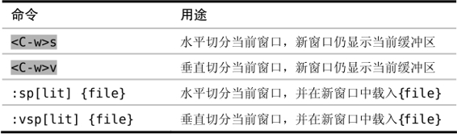

）。我们既可以打开多个窗口，在这些窗口中显示同一个缓冲区，也可以在每个窗口里载入不同的缓冲区。Vim 的窗口管理系统很灵活，我们可以根据工作的需要来调整工作区。
）。我们既可以打开多个窗口，在这些窗口中显示同一个缓冲区，也可以在每个窗口里载入不同的缓冲区。Vim 的窗口管理系统很灵活，我们可以根据工作的需要来调整工作区。技巧39将工作区切分成窗口
Vim 允许我们将工作区切分成若干窗口，在这些窗口里并排显示多个缓冲区。
在Vim 术语中，窗口是缓冲区的显示区域（参见:h window）。我们既可以打开多个窗口，在这些窗口中显示同一个缓冲区，也可以在每个窗口里载入不同的缓冲区。Vim 的窗口管理系统很灵活，我们可以根据工作的需要来调整工作区。
创建分割窗口
Vim 在启动时只会打开单个窗口。用<C-w>s命令可以水平切分此窗口，使之成为两个高度相同的窗口；或者可以用<C-w>v命令对其进行垂直切分，这样会产生两个宽度相同的窗口。这两条命令可以重复任意多次，结果就会把工作区一次次地切分为更小的窗口，就像细胞分裂那样。
图6-1展示了切分后的效果，图中的阴影区域代表活动窗口。
图6-1分割窗口效果
每次执行完<C-w>s和<C-w>v命令后，新生成的两个窗口都会显示与原窗口相同的缓冲区。把同一缓冲区显示在不同窗口里会很有用，特别是在编辑长文件时。举个例子，我们可以滚动其中一个窗口，使之显示缓冲区的一部分，这样，在修改第二个窗口中缓冲区的另外一部分时，就可以参考第一个窗口中的内容。
我们可以用:edit命令把另外一个缓冲区载入活动窗口中。如果先执行<C-w>s，再执行:edit {filename}，就会把工作区分成两个窗口，并在其中一个窗口中打开新缓冲区，而另一个窗口则继续显示原有的缓冲区。另外一种做法是使用:split {filename}命令，它把上述两步合并成为了一步。下表总结了把工作区切分为窗口的几种方式：

在窗口间切换
Vim 提供了一些在窗口间进行切换的命令，下表总结了其中最常用的一些命令（完整命令列表参见:h window-move-cursor）：
实际上，<C-w><C-w>完成的功能和<C-w>w相同，就是说我们可以一直按住<Ctrl>键，然后再输入ww（或wj，或上表中的其他命令）来切换活动窗口。<C-w><C-w>要比<C-w>w更容易按一些，尽管写出来时它显得更繁琐。如果经常使用多个窗口，那么你可能需要考虑把这些命令映射成更方便的按键。
如果你的终端支持鼠标操作的话，或是你用的是 GVim，那么你也可以通过鼠标点击来激活一个窗口。如果你用不了鼠标，请检查一下‘mouse’选项是否被正确设置了（参见:h ‘mouse’）。
关闭窗口
想减少工作区中窗口的数量，可以用两种方式：一是使用:close命令关闭活动窗口，二是用:only命令关闭除活动窗口外的所有其他窗口。下表总结了这两条命令，并列出了与之等效的普通模式命令：
改变窗口大小及重新排列窗口
Vim 提供了一些用于改变窗口大小的按键映射项，完整的列表请查阅 :h window-resize，下表中列出了最常用的几个命令：

改变窗口大小是我喜欢用鼠标做的少量操作之一，其做法很简单。点击窗口间的分隔线，拖动鼠标直至窗口变成期望的大小，然后松开鼠标即可。不过，只有当你的终端支持鼠标，或是你在用 GVim 时才能用这个功能。
Vim 也有用于重排窗口的命令，但此处不再赘述，这里给出一个Vimcasts.org的链接，其屏幕截图讲解了如何对窗口进行重排(2)。你也可以查阅:h window-moving以了解更多细节。